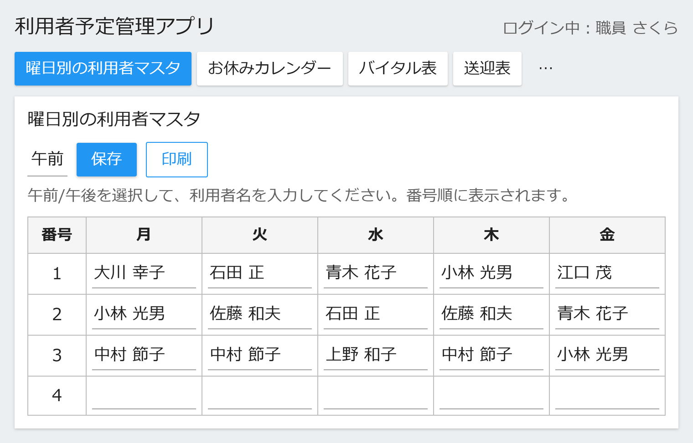
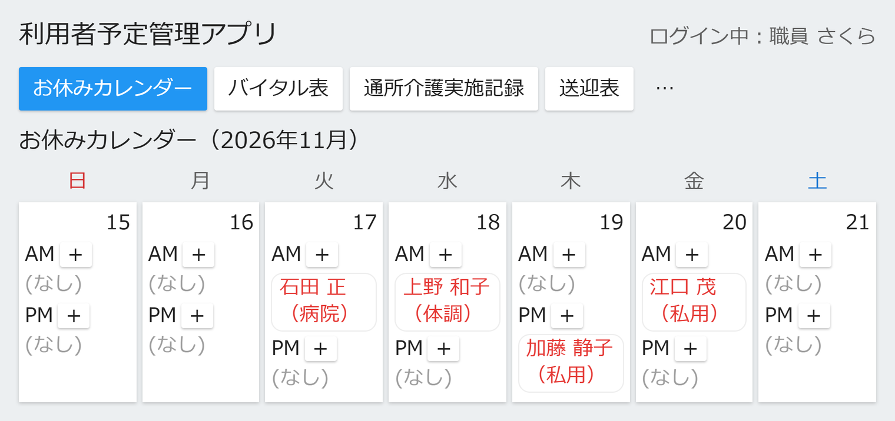
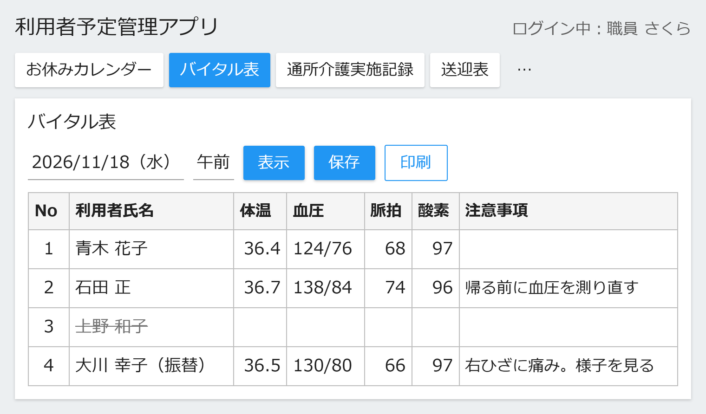
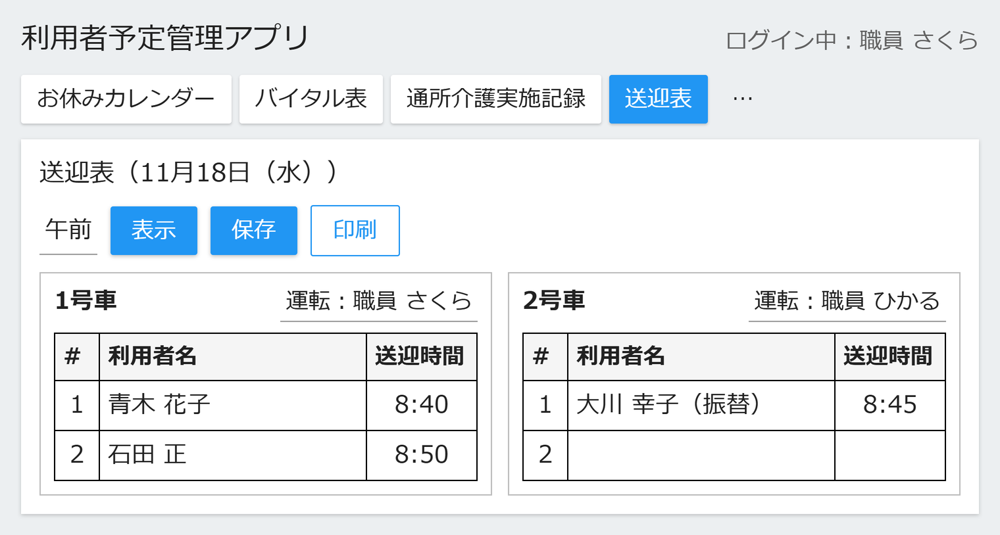
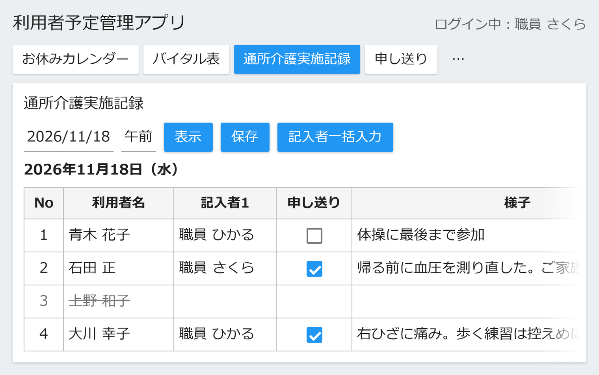
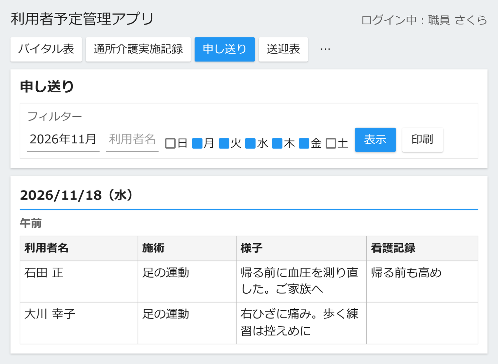

事例｜リハビリアスレチック（通所介護・神奈川県相模原市）
お休みも振替も、
入れるのは一度だけ。
リハビリアスレチックのために作ったアプリです。お休みや振替を一度入れると、その日のバイタル表・送迎表・実施記録に、その日来る方がそろって出ます。請求は今までどおり介護ソフトで。
押して確かめる入れるのは一度
お休みも振替も、一か所に入れるだけです。ほかの表で、入れ直しません。
ほかの表に、そろって出る
バイタル表・送迎表・実施記録に、その日来る方が並びます。印を付けた記録は、申し送りへ。
この施設の仕事の形で
曜日ごとの予定、送迎の車、施術の項目まで、この施設のやり方のままです。請求は今までどおり介護ソフトで。
01 / 押して確かめる
一つ入れると、
ほかの表がそろって変わります。
ある水曜日の午前（見本）
入れるのは一か所だけ。
押すと、表がそろって変わります。
ボタンを押すと、表が変わります。
バイタル表
| 利用者氏名 | 体温 | 血圧 |
|---|---|---|
| 青木 花子 | ||
| 石田 正 | ||
| 上野 和子（お休み） | ||
| 大川 幸子（振替） |
送迎表
1号車の迎え：名前の候補
- 青木 花子
- 石田 正
- 上野 和子
- 大川 幸子（振替）
実施記録
| 利用者氏名 | 申し送り | 様子 |
|---|---|---|
| 青木 花子 | ||
| 石田 正 | 帰る前に血圧を測り直した。ご家族へ | |
| 上野 和子（お休み） | ||
| 大川 幸子 |
申し送り
| 利用者氏名 | 様子 |
|---|---|
| 印を付けた行は、まだありません。 | |
| 石田 正 | 帰る前に血圧を測り直した。ご家族へ |
本物のアプリの動きを、架空の名前で再現した見本です。本物のアプリとデータは使っていません。押した内容は、どこにも送られず、残りません。
02 / ご感想
使っている方から、
いただいた言葉です。
バイタル表や送迎表が利用されている方と連携されているので、とても使いやすいです。時間短縮にもなっています。
前は
実施記録とお休みは紙でした。紙に書いてから、ソフトに打ち直していました。
作った物
利用者・曜日の予定・お休み・振替を一度入れると、その日のバイタル表・送迎表・実施記録に、その日来る方が並ぶアプリ。請求は今までどおり介護ソフトで。
03 / できるようになった事
紙からアプリにして、
できるようになった事。
まとめて入れられる
記入者は、表の全員に一度で入ります。送迎表は前の日をコピーして使えます。
迎えの行き違いを防ぐ
お休みの方は、送迎表に出ません。振替の方は「（振替）」付きで出ます。迎え忘れも、むだな迎えも防げます。
あちこちで管理しない
お休みも振替も、入れるのは一か所。バイタル表・実施記録・送迎表が、それに合わせてそろいます。
04 / 使っている画面
入れる所と、並ぶ表。
画面は、実際の画面を、架空の利用者・職員で作り直したものです。画像を押すと、大きく開きます。
-

入れる所
曜日別の利用者マスタ
決まった曜日に来る方を、午前・午後ごとに入れておきます。
ここに入れると
その曜日のバイタル表・送迎表・実施記録の、もとになります。
-

入れる所
お休みカレンダー
お休みの電話を受けたら、その日の午前か午後の「＋」から名前を入れます。理由も残せます。決まった曜日のお休みは、ひと月分をまとめて入れられます。
ここに入れると
その日のバイタル表と実施記録では名前が線で消え、送迎表の名前の候補には出なくなります。
-

並ぶ表
バイタル表
その日来る方が並び、体温・血圧・脈拍・酸素と注意事項を入れます。
つながり
お休みの方は名前が線で消え、振替で来る方には（振替）と出ます。
-

並ぶ表
送迎表
車ごとに、運転する職員と、迎えに行く方・時間を並べて印刷します。
つながり
名前の候補に、その日来る方が出ます。お休みの方は出ず、振替で来る方は（振替）と出るので、迎えの行き違いを防げます。前の日の送迎表をコピーしたり、同じ曜日の日にまとめて保存したりもできます。
-

並ぶ表
通所介護実施記録
その日来る方が並び、記入者・様子・看護記録・施術の項目を入れます。表は右へ長く続きます（画像は左の一部）。
つながり
記入者は［記入者一括入力］で、表の全員に一度で入ります。お休みの方は名前が線で消えます。「申し送り」に印を付けた行は、申し送りの画面に並びます。
-

並ぶ表
申し送り
実施記録で「申し送り」に印を付けた行が、日ごと・午前午後ごとに並びます。
使い方
年月・利用者名・曜日で絞り込み、そのまま印刷できます。書き写す手間がありません。


05 / つながっている画面
この施設の仕事に合わせた画面です。
- 利用者の一覧
- 曜日ごとの利用者
- お休み
- 振替・臨時
- 送迎表
- 送迎カレンダー
- バイタル
- 通所介護の実施記録
- 施術・運動シート
- 申し送り
- お誕生日
- 車両
- 使う人の管理
- 使い方の説明
お問い合わせ
相談を受け付けています。
今の画面と紙を見ながら、使いにくい所を伺います。相談と契約前のデモに費用はかかりません。